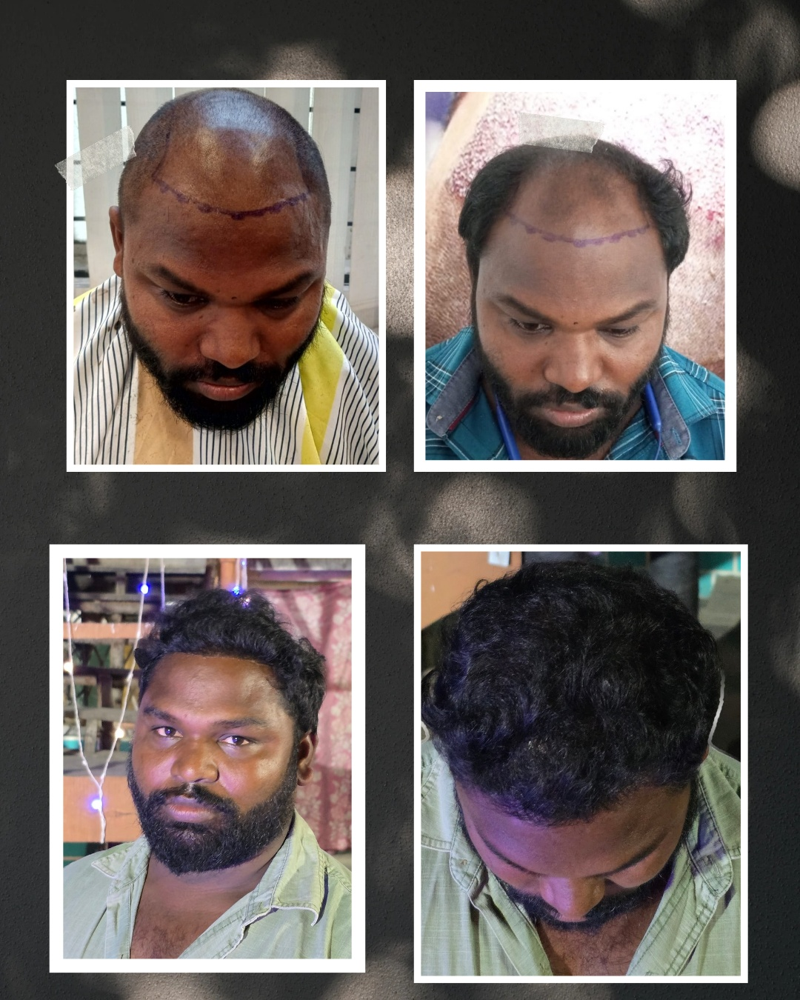
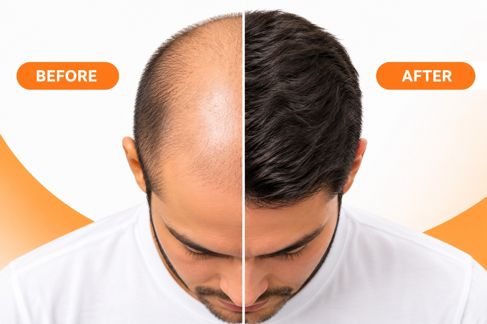
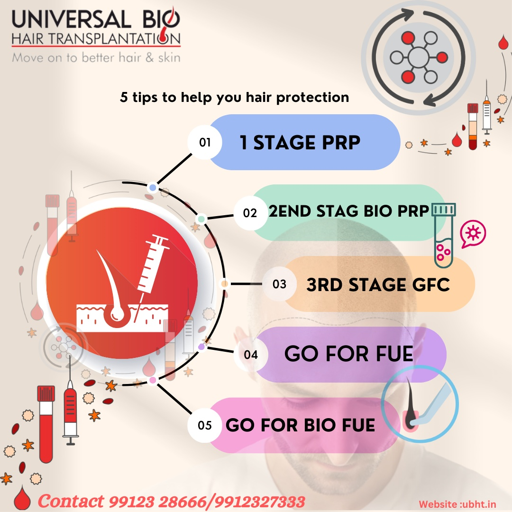
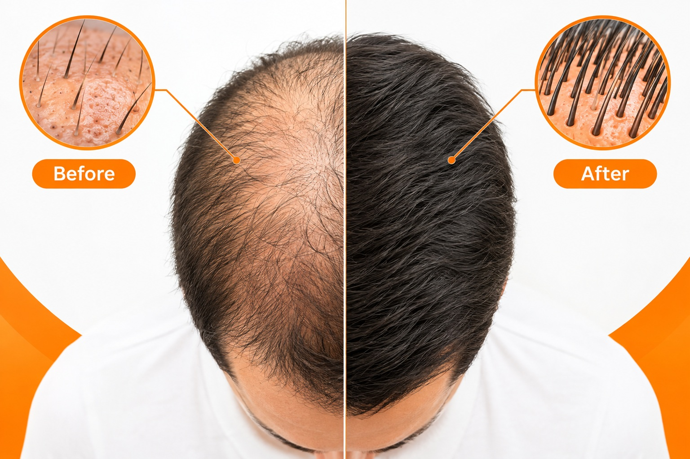
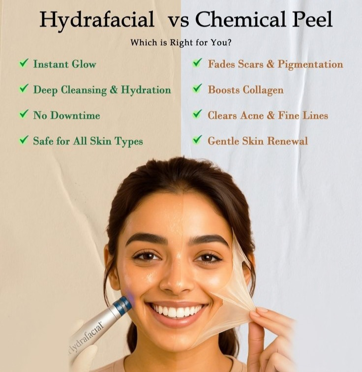
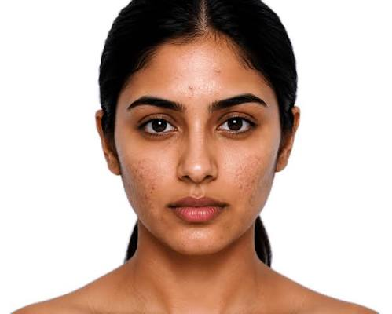

Personalised hair restoration, regenerative hair therapies and aesthetic skin care in a modern clinical environment.
Personalised hair restoration and skin-care pathways in a modern clinical setting.
We combine detailed assessment, treatment planning and aftercare education to create a clear patient journey from consultation to follow-up.
Short key points stay on the home page. Detailed treatment information appears in the dedicated sections below.
Individual follicular graft extraction and placement for natural-looking hair restoration.
Platelet-rich fibrin based scalp therapy for selected hair-restoration plans.
Platelet-based regenerative support personalised after clinical assessment.
Growth-factor concentrate protocols used for selected hair-growth programs.
Each treatment should be selected after an appropriate consultation. Replace all demonstration images with your approved clinic photography.
Use this section to showcase your actual equipment, clinic interiors, doctor/team and procedure environment.


Use only genuine, consented patient photographs. Keep lighting, angle and distance consistent and identify the treatment interval where appropriate.




Images shown here are file references. Add your real patient images to the same folder using image1.jpg through image15.jpg.
FUE is a minimally invasive surgical hair-restoration technique, not a completely non-surgical procedure.
Use image2.jpg as the approved FUE before/after image pair or replace it with your actual standardised clinical photographs.
| Meal | Example |
|---|---|
| Breakfast | Eggs/paneer + oats/whole grain + fruit |
| Lunch | Dal/lean protein + vegetables + rice/roti + curd |
| Snack | Fruit + nuts/seeds |
| Dinner | Protein + vegetables + whole grain |
PRP uses a patient's own blood, processed to concentrate platelets, then applied/injected according to the clinical protocol.
| Focus | Foods |
|---|---|
| Protein | Eggs, fish, chicken, paneer, dal, beans |
| Iron | Leafy greens, legumes, meat, fortified foods |
| Healthy fats | Nuts, seeds, fish, avocado |
| Micronutrients | Fruits, vegetables, dairy or suitable alternatives |
Growth-factor concentrate protocols vary. Suitability should be determined by a qualified clinician.
Show minimum-hair to fuller-hair photographs using the same angle, lighting and distance, with the treatment interval clearly stated.
| Daily focus | Examples |
|---|---|
| Protein | Eggs, fish, pulses, soy, dairy |
| Vegetables | Spinach, carrots, peppers, broccoli |
| Fruits | Citrus, berries, guava, papaya |
| Hydration | Water regularly through the day |
Low-level light therapy is a non-invasive option used in selected hair-loss management programs.
Flaking can have different causes, so diagnosis helps select the appropriate scalp-care plan.
Facial PRP uses prepared platelet-rich material according to a selected clinical protocol.
Use image7.jpg or your actual consented facial before/after photos. Avoid filters and misleading edits.
A controlled chemical exfoliation selected according to the skin concern, skin type and treatment depth.
Protocols can be tailored for acne, hyperpigmentation, back acne and skin glow goals.
Long-term hair reduction may use laser/light-based technology or other clinician-selected methods.
Use image10.jpg for an approved before/after visual and state the treatment area, number of sessions and follow-up interval.
Micro-injection protocols vary in ingredients and indication and should be clinician-selected.
Use image11.jpg for a genuine, consented photo pair. Match framing and lighting and state the treatment interval.
Controlled radio-frequency energy is used in selected skin-tightening and texture protocols.
Scar type, skin tone and active acne are assessed before selecting a treatment approach.
Call, WhatsApp or submit the consultation form. The phone, WhatsApp and location details below were cross-checked against a current public business listing; please confirm them with the clinic before launch.
Hair restoration & skin care